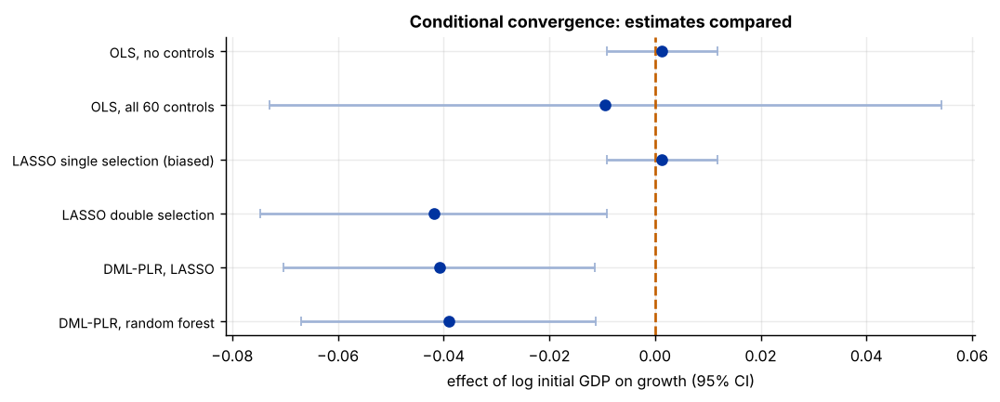
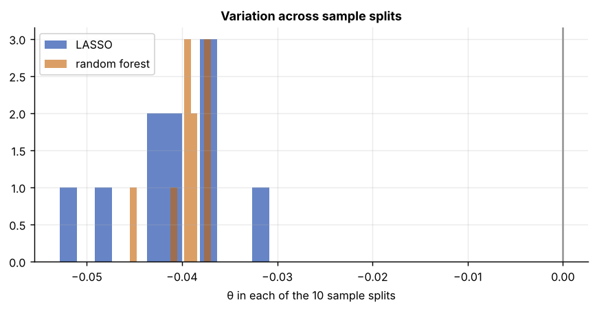

Step 1The question and the model
Do poorer countries grow faster? The neoclassical growth model predicts conditional convergence: holding constant the determinants of a country's steady state, a lower initial income should mean faster growth. The test is the sign of \(\theta\) in
where \(X_i\) are the steady-state determinants. The Barro–Lee data used by Belloni, Chernozhukov and Hansen (2011, 2014) have 90 countries and 60 candidate controls: schooling by level and sex, population growth, fertility, investment, government spending, openness, political instability, the black-market premium and more. With 60 controls and 90 countries, OLS is barely estimable, and choosing a handful of controls by hand is exactly the specification search that convergence studies have been criticised for.
This is the partially linear model: the treatment \(D\) enters linearly with one coefficient \(\theta\), and the controls enter through an unknown function \(g\) that machine learning can estimate. DML (Chernozhukov et al. 2018) estimates \(\theta\) in three steps:
- predict the outcome from the controls, \(\hat\ell(X) \approx E[Y\mid X]\), and the treatment from the controls, \(\hat m(X) \approx E[D\mid X]\), each by machine learning;
- form the residuals \(\tilde Y = Y - \hat\ell(X)\) and \(\tilde D = D - \hat m(X)\);
- regress \(\tilde Y\) on \(\tilde D\): the slope is \(\hat\theta\).
Two ingredients make the standard error valid even though the predictions are regularised: the residual-on-residual form is Neyman-orthogonal (small errors in \(\hat\ell\) and \(\hat m\) have only second-order effects on \(\hat\theta\)), and every prediction is made by cross-fitting, on observations the learner was not trained on.
The identifying assumption is the same as for OLS
DML assumes that, given \(X\), the remaining variation in initial GDP is unrelated to unobserved determinants of growth. Machine learning makes the adjustment for \(X\) flexible; it does not make the assumption true. Argue it as you would for OLS, and if it fails, use an instrument (DML-IV) or a research design.
Step 2Load the data and confirm the starting point
import numpy as np
import pandas as pd
import statsmodels.api as sm
df = pd.read_csv("growth.csv")
y, d = "growth", "gdpsh465"
X = [c for c in df.columns if c not in (y, d)]
print(f"N = {len(df)} countries, {len(X)} controls; treatment {d} = log GDP per capita, 1965")
small = sm.OLS(df[y], sm.add_constant(df[[d]])).fit(cov_type="HC1")
full = sm.OLS(df[y], sm.add_constant(df[[d] + X])).fit(cov_type="HC1")
print(f"OLS without controls: theta = {small.params[d]:+.4f} (s.e. {small.bse[d]:.4f})")
print(f"OLS with all 60 controls: theta = {full.params[d]:+.4f} (s.e. {full.bse[d]:.4f}); residual df = {int(full.df_resid)}")N = 90 countries, 60 controls; treatment gdpsh465 = log GDP per capita, 1965 OLS without controls: theta = +0.0013 (s.e. 0.0053) OLS with all 60 controls: theta = -0.0094 (s.e. 0.0324); residual df = 28
Without controls, richer countries did not grow more slowly: unconditional convergence fails. With all 60 controls, OLS uses up most of the sample (29 residual degrees of freedom) and the estimate is too imprecise to say anything. That is the case for DML (Rule B2: 60 controls, far more than 10).
from sklearn.model_selection import KFold, cross_val_score
from sklearn.pipeline import make_pipeline
from sklearn.preprocessing import StandardScaler
from sklearn.linear_model import LassoCV
from sklearn.ensemble import RandomForestRegressor
cv = KFold(5, shuffle=True, random_state=0)
rmse = lambda m, t: (-cross_val_score(m, df[X], df[t], cv=cv, scoring="neg_mean_squared_error").mean()) ** .5
lasso = make_pipeline(StandardScaler(), LassoCV(cv=5, random_state=0, max_iter=50000))
forest = RandomForestRegressor(n_estimators=300, min_samples_leaf=5, max_features=.5, random_state=0)
for t in (y, d):
a, b = rmse(lasso, t), rmse(forest, t)
print(f"predicting {t:9s} from the controls: LASSO {a:.4f}, forest {b:.4f}, forest gain {1 - b / a:+.1%}")predicting growth from the controls: LASSO 0.0513, forest 0.0483, forest gain +5.9% predicting gdpsh465 from the controls: LASSO 0.3660, forest 0.3778, forest gain -3.2%
The forest predicts growth slightly better than LASSO from the controls, and initial GDP slightly worse. Neither clearly dominates, so the guide estimates DML with both learners and checks that they agree (Rule B4).
Step 3Why not just use LASSO to pick the controls?
The tempting shortcut is to run LASSO of growth on initial GDP and the 60 controls, keep what survives, and report OLS on the survivors. This single selection is biased: LASSO drops controls that predict growth only weakly, even if they are strongly related to initial GDP, and those are exactly the confounders that matter. Belloni, Chernozhukov and Hansen (2014) show that one must also keep controls that predict the treatment. Their double selection is the simplest valid version of the DML idea:
LASSO's penalty matters here. Cross-validation chooses a penalty for prediction and, with 90 observations, keeps most of the 60 controls. For selecting controls, Belloni, Chernozhukov and Hansen use a theory-based plug-in penalty, \(\lambda = 2c\,\hat\sigma\sqrt{n}\,\Phi^{-1}\!\big(1 - \gamma/(2p)\big)\) with \(c = 1.1\) and \(\gamma = 0.1/\log n\), iterated on the residual variance. It keeps only controls whose signal is clearly above noise.
from sklearn.linear_model import Lasso
from scipy.stats import norm
Z = StandardScaler().fit_transform(df[X])
n, p = Z.shape
def lasso_plugin(target, c=1.1):
t = df[target].to_numpy()
sigma = t.std()
for _ in range(5): # iterate the noise level on the LASSO residuals
lam = 2 * c * sigma * np.sqrt(n) * norm.ppf(1 - .1 / np.log(n) / (2 * p))
fit = Lasso(alpha=lam / (2 * n), max_iter=50000).fit(Z, t)
sigma = (t - fit.predict(Z)).std()
return {X[j] for j, b in enumerate(fit.coef_) if b != 0}
keep_y, keep_d = lasso_plugin(y), lasso_plugin(d)
single = sm.OLS(df[y], sm.add_constant(df[[d] + sorted(keep_y)])).fit(cov_type="HC1")
double = sm.OLS(df[y], sm.add_constant(df[[d] + sorted(keep_y | keep_d)])).fit(cov_type="HC1")
print(f"controls selected for growth: {len(keep_y)}; for initial GDP: {len(keep_d)} {sorted(keep_d)}")
print(f"single selection: theta = {single.params[d]:+.4f} (s.e. {single.bse[d]:.4f})")
print(f"double selection: theta = {double.params[d]:+.4f} (s.e. {double.bse[d]:.4f})")controls selected for growth: 0; for initial GDP: 7 ['freetar', 'hm65', 'humanf65', 'lifee065', 'pop6565', 'sf65', 'teapri65'] single selection: theta = +0.0013 (s.e. 0.0053) double selection: theta = -0.0419 (s.e. 0.0167)
The result is a textbook illustration of the problem. LASSO of growth on the controls keeps none of them: no single control predicts growth strongly enough. Single selection therefore reduces to OLS without controls and finds no convergence. But several controls strongly predict initial GDP, and those are the confounders. Double selection keeps them and finds a clearly negative \(\theta\), close to the \(-0.050\) (s.e. 0.016) that Belloni, Chernozhukov and Hansen (2014) report with the same data.
Step 4Double machine learning with DoubleML
The DoubleML package (Bach et al. 2022) implements the estimator with cross-fitting and repeated sample splits. The learners are passed in as scikit-learn models: ml_l predicts the outcome and ml_m the treatment.
import doubleml as dml
data = dml.DoubleMLData(df, y_col=y, d_cols=d, x_cols=X)
learners = {"LASSO": make_pipeline(StandardScaler(), LassoCV(cv=5, random_state=0, max_iter=50000)),
"random forest": RandomForestRegressor(n_estimators=500, min_samples_leaf=5, max_features=.5, random_state=0)}
fits = {}
for name, ml in learners.items():
np.random.seed(0)
fits[name] = dml.DoubleMLPLR(data, ml_l=ml, ml_m=ml, n_folds=5, n_rep=10).fit()
s = fits[name].summary
print(f"DML-PLR, {name:13s}: theta = {fits[name].coef[0]:+.4f} s.e. = {fits[name].se[0]:.4f} "
f"95% CI [{s['2.5 %'].iloc[0]:+.4f}, {s['97.5 %'].iloc[0]:+.4f}] p = {s['P>|t|'].iloc[0]:.3f}")DML-PLR, LASSO : theta = -0.0408 s.e. = 0.0150 95% CI [-0.0722, -0.0113] p = 0.007 DML-PLR, random forest: theta = -0.0391 s.e. = 0.0142 95% CI [-0.0679, -0.0112] p = 0.006
With 90 observations, one random split into folds can matter, so the estimator is repeated over 10 different splits (n_rep=10) and the median is reported, with a standard error that includes the variation across splits.
Step 5Compare the estimates
rows = {"OLS, no controls": (small.params[d], small.bse[d]),
"OLS, all 60 controls": (full.params[d], full.bse[d]),
"LASSO single selection (biased)": (single.params[d], single.bse[d]),
"LASSO double selection": (double.params[d], double.bse[d])}
rows.update({f"DML-PLR, {k}": (f.coef[0], f.se[0]) for k, f in fits.items()})
tab = pd.DataFrame(rows, index=["theta", "s.e."]).T
tab["t"] = tab["theta"] / tab["s.e."]
print(tab.round(4))
gap = abs(fits["LASSO"].coef[0] - fits["random forest"].coef[0]) / max(f.se[0] for f in fits.values())
print(f"\nLASSO and forest learners differ by {gap:.2f} standard errors")theta s.e. t OLS, no controls 0.0013 0.0053 0.2475 OLS, all 60 controls -0.0094 0.0324 -0.2893 LASSO single selection (biased) 0.0013 0.0053 0.2475 LASSO double selection -0.0419 0.0167 -2.5039 DML-PLR, LASSO -0.0408 0.0150 -2.7141 DML-PLR, random forest -0.0391 0.0142 -2.7437 LASSO and forest learners differ by 0.12 standard errors
import matplotlib.pyplot as plt
fig, ax = plt.subplots(figsize=(8, 3.2))
ypos = np.arange(len(tab))[::-1]
ax.errorbar(tab["theta"], ypos, xerr=1.96 * tab["s.e."], fmt="o", color="#0033a0", ecolor="#9fb3d6", capsize=3)
ax.axvline(0, color="#c46000", ls="--"); ax.set_yticks(ypos); ax.set_yticklabels(tab.index, fontsize=8)
ax.set_xlabel("effect of log initial GDP on growth (95% CI)"); ax.set_title("Conditional convergence: estimates compared")
Step 6How much does the sample split matter?
thetas = pd.DataFrame({k: f.all_coef[0] for k, f in fits.items()})
print(thetas.describe().loc[["mean", "std", "min", "50%", "max"]].round(4))
fig, ax = plt.subplots()
for k in thetas: ax.hist(thetas[k], bins=12, alpha=.6, label=k)
ax.axvline(0, color="#999"); ax.set_xlabel("θ in each of the 10 sample splits"); ax.set_title("Variation across sample splits"); ax.legend()LASSO random forest mean -0.0411 -0.0394 std 0.0063 0.0024 min -0.0529 -0.0455 50% -0.0408 -0.0391 max -0.0308 -0.0370

The spread across splits is the price of a small sample. Report the median over many splits, never the result of one split chosen after the fact.
Step 7Write it up
How to write it: method and results
We estimate the effect of log initial GDP per capita on growth in the partially linear model \(\text{growth}_i = \theta \log \text{GDP}_{i,1965} + g(X_i) + \varepsilon_i\), where \(X_i\) contains 60 country characteristics, using double machine learning (Chernozhukov et al. 2018). The nuisance functions are estimated with LASSO and, alternatively, with a random forest, using five-fold cross-fitting repeated over 10 random splits. Unconditionally there is no convergence (\(\hat\theta = 0.001\)), and OLS with all 60 controls is too imprecise to be informative (s.e. 0.032). Double machine learning gives \(\hat\theta \approx -0.04\) with both learners (s.e. about 0.015, p < 0.01), and the two learners agree within a fraction of a standard error. The estimate is close to post-double-selection LASSO with a plug-in penalty (\(-0.042\)), and to the \(-0.050\) reported by Belloni, Chernozhukov and Hansen (2014): conditional on their steady-state determinants, poorer countries grew faster (Table X).
Checklist for the paper
- State the partially linear model and argue that the controls capture the confounders.
- Explain why OLS is not enough (many controls, or nonlinear controls).
- Report the learners, the number of folds and of repeated splits.
- Show DML with at least two learners, plus OLS and double selection as benchmarks.
- Report the variation across sample splits.